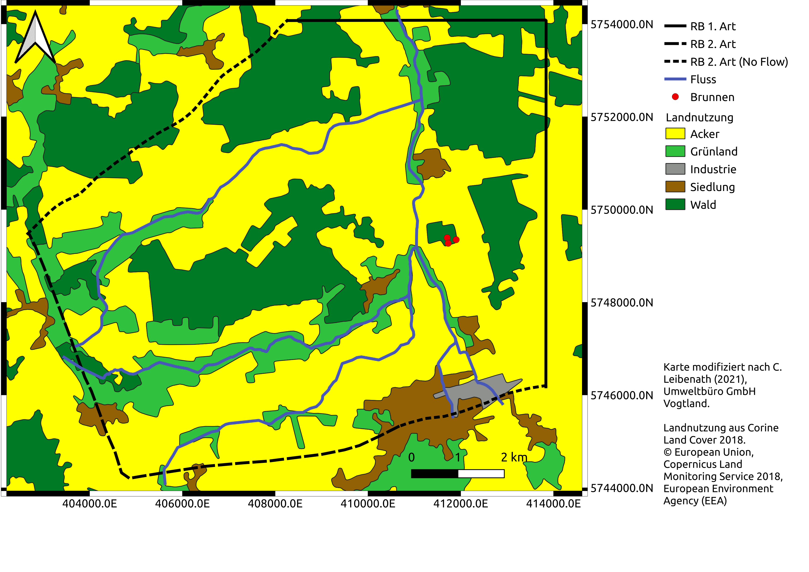

Trennstromlinie
Trennstromlinie#

import matplotlib.pyplot as plt
import numpy as np
from ipywidgets import *
import time
def ymax_conf(Q, K, i, b):
"""
Get the
"""
ymax = Q/(2.*K*np.abs(i)*b)
return ymax
def x0_conf(Q, K, i, b):
x0 = -Q/(2.*np.pi*K*i*b)
return x0
def ymax_unconf(Q, L, K, h1, h2):
ymax = Q*L/(K*(h1**2-h2**2))
return ymax
def x0_unconf(Q, L, K, h1, h2):
x0 = -Q*L/(np.pi*K*(h1**2-h2**2))
return x0
def TSL_conf(Q, K, i, b, dist_iso, plot_coor):
h2 = h1 - i * (x1 - x2)
L = x1 - x2
ymax = ymax_conf(Q, K, i, b)
#x0 = x0_conf(Q, K, i, b)
y = np.arange(-ymax, ymax, 0.1)
x = y/(np.tan(2*np.pi*K*i*b*y/Q))
h_iso = isohypsen_conf(h1, h2, x1, x2, K, Q, b, x_iso_tilted, y_iso_tilted)
plot(x,y, x_iso_tilted, y_iso_tilted, h_iso, dist_iso, plot_coor)
def TSL_unconf(Q, K, i, dist_iso, plot_coor):
h2 = h1 - i * (x1 - x2)
L = x1 - x2
ymax = ymax_unconf(Q, L, K, h1, h2)
#x0 = x0_unconf(Q, L, K, h1, h2)
y = np.arange(-ymax, ymax, 0.1)
x = y/(np.tan(np.pi*K*(h1**2-h2**2)*y/(Q * L)))
h_iso = isohypsen_unconf(h1, h2, x1, x2, K, Q, x_iso_tilted, y_iso_tilted)
plot(x,y, x_iso_tilted, y_iso_tilted, h_iso, dist_iso, plot_coor)
def isohypsen_conf(h1, h2, x1, x2, K, Q, b, x, y):
h_r1 = 0
h_iso = (h2-h1)*(x-x1)/(x2-x1) +h1 + Q * np.log(np.sqrt(x**2+y**2) / r1) / (2 * np.pi * K * b) + h_r1
return h_iso
def isohypsen_unconf(h1, h2, x1, x2, K, Q, x, y):
h_r1 = 0
h_iso = (h2-h1)*(x-x1)/(x2-x1) +h1 + np.sqrt(Q * np.log(np.sqrt(x**2+y**2) / r1) / (np.pi * K) + h_r1**2)
return h_iso
def plot(x,y, x_iso, y_iso, h_iso, dist_iso, plot_coor):
tsl_normal = np.vstack([x,y])
iso_normal = np.stack([x_iso,y_iso], axis=2)
iso_tilted= np.tensordot(rotation_matrix, iso_normal, axes=([1],[2]))
tsl_tilted = rotation_matrix.dot(tsl_normal)
# Erstellen der Figure und der Axes
fig = plt.figure(figsize=(20,20))
ax = plt.subplot(111)
# Bild in die Axes einfügen
ax.imshow(img)
# Grid in die Box einfügen
ax_child = ax.inset_axes([pxl_l, pxl_o, pxl_r-pxl_l,pxl_u-pxl_o], transform=ax.transData)
ax_child.patch.set_alpha(0.0)
ax_child.scatter(0,0, s=20)
ax_child.set_xlim([x_min,x_max])
ax_child.set_ylim([y_min,y_max])
ax_child.plot(tsl_tilted[0,:], tsl_tilted[1,:], color="red")
positions = np.arange(np.ceil(np.min(h_iso)), np.max(h_iso), dist_iso)
ctr = ax_child.contour(iso_tilted[0,:,:], iso_tilted[1,:,:], h_iso, levels=positions, colors="blue")
ax_child.clabel(ctr, ctr.levels, inline=True, fontsize=14)
if plot_coor:
ax_child.arrow(y_arrow_start[0][0],y_arrow_start[1][0],
y_arrow_end[0][0] - y_arrow_start[0][0],
y_arrow_end[1][0] - y_arrow_start[1][0],
head_width=200, width=20, color="black")
ax_child.arrow(x_arrow_start[0][0],x_arrow_start[1][0],
x_arrow_end[0][0] - x_arrow_start[0][0],
x_arrow_end[1][0] - x_arrow_start[1][0],
head_width=200, width=20, color="black")
#fig.plot(ax=ax_child)
# Ausschalten aller automatischen Axenbeschriftungen
ax.axis("off")
ax_child.axis("off")
return fig, ax
def fmt(x):
s = f"{x:.1f}"
if s.endswith("0"):
s = f"{x:.0f}"
return rf"{s}" if plt.rcParams["text.usetex"] else f"{s}"
def interactive_plot(flow_type):
wgts = {"Q":widgets.FloatSlider(value=0.01,min=0, max=1, step=0.01, description=r"Well Discharge, $\frac{m^3}{s}$",style= {'description_width': 'initial'}),
"K":widgets.FloatLogSlider(value=6E-4,base=10,min=-6, max=-2, step=0.1,readout=True,readout_format='e',description=r"Hydraulic Conductivity, $\frac{m}{s}$",style= {'description_width': 'initial'}),
"i":widgets.FloatSlider(value=0.0017,min=-0.006, max=0.006, step=0.0001,description="Background Gradient",style= {'description_width': 'initial'}, readout_format='.4f'),
"dist_iso":widgets.FloatSlider(value=1,min=0.5, max=10, step=0.5,description="Resolution of Isohypses",style= {'description_width': 'initial'}),
"plot_coor":widgets.Checkbox(False,description="Add coordinate axis",style= {'description_width': 'initial'}),
"continuous_update":False}
if flow_type == "Confined":
func = TSL_conf
wgts["b"] = widgets.FloatSlider(value=120,min=1, max=200, step=1,description="Aquifer thickness, m",style= {'description_width': 'initial'})
elif flow_type == "Unconfined":
func = TSL_unconf
interact_manual(func, **wgts)
theta = np.radians(29)
c, s = np.cos(theta), np.sin(theta)
rotation_matrix = np.array(((c, -s), (s, c)))
inv_theta = np.radians(-29)
c, s = np.cos(inv_theta), np.sin(inv_theta)
inv_rotation_matrix = np.array(((c, -s), (s, c)))
readout_format='.3f'
y_arrow_end = rotation_matrix.dot([[0],[2000]])
y_arrow_start = rotation_matrix.dot([[0],[-2000]])
x_arrow_start = rotation_matrix.dot([[-4000],[0]])
x_arrow_end = rotation_matrix.dot([[2000],[0]])
xscale = 1. * 2000 / (0.48 + 0.35)
yscale = 1. * 2000 / (0.125 + 0.265)
x_min = -4 * xscale
x_max = 1.18 * xscale
y_min = -1.07 * yscale
y_max = 1 * yscale
x_iso, y_iso = np.meshgrid(np.arange(x_min, x_max, 10), np.arange(y_min, y_max, 10))
iso_normal = np.stack([x_iso,y_iso], axis=2)
iso_tilted= np.tensordot(inv_rotation_matrix, iso_normal, axes=([1],[2]))
x_iso_tilted = iso_tilted[0,:,:]
y_iso_tilted = iso_tilted[1,:,:]
r1 = 10000
pxl_l = 27
pxl_o = 20
pxl_r = 2520
pxl_u = 2125
x1 = -200
x2 = 400
h1 = 61
layout = widgets.Layout(width='auto', height='40px')
# Einladen der Draufsicht
img = plt.imread("abstracted_map_v3.png")
interact(interactive_plot,
flow_type = widgets.Dropdown(options=["Confined", "Unconfined"],value="Confined", description="Aquifer Type"),
continuous_update=False)
<function __main__.interactive_plot(flow_type)>